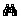
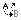

Find and Replace
Find and Replace
From FCKeditor Docs
|
Contents [hide]
|
To find a phrase/word in the text you should firstly press button on the toolbar. After that a popup window called "Find and Replace" will appear:
After deciding what options you want to use just press "Find" and the program will highlight the phrase/word it found. If you press "Find" again the program will find the next phrase/word matching to your request.
To replace a phrase/word in your text press button on your keyboard. A popup window will appear:
If you want to replace only one phrase/word press "Replace". The program will firstly find your text and highlight it. Than you should press the "Replace" button again in order to go on with the replacement.
If you want to replace all the phrases/words press "Replace All".
Copyright © 2009, Robert Moorehouse